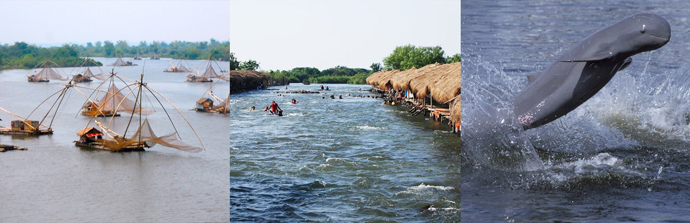

Kratié (Khmer: ក្រចេះ, Krâchéh [krɑˈceh]), alternatively spelled Kracheh, is a province of Cambodia located in the northeast. It borders Stung Treng to the north, Mondulkiri to the east, Kampong Thom and Kampong Cham to the west, and Tboung Khmum, and the country of Vietnam to the south. The province’s capital is the town of Kratié located within the Kratié Municipality.The area now known as Kratié was part of the early first millennium Kingdom of Funan until Funan itself was superseded and absorbed in the 6th century by Chenla. Sampheak Borak, the former Royal Capital during the Chenla Era, is located in Sambo District.[citation needed] In addition, Kratié has Vihear Sasar Muayroy Pagoda built in the 16th century. This pagoda is related to a Khmer legend Krapeur Nen Thun (Venerable Monk Thun, the Crocodile). Kratié has several temples built in the 8th century such as Khvas Pi, Pram, and Koh Kring that has perfect deities, ancient halls, Khmer ancient houses, and French-style buildings. The area near Kratié along the Mekong River was one of the most densely populated regions of the pre-Angkorian era of Cambodia. Lon Nol was the province's governor in 1945. During the Vietnam and Cambodian Civil Wars and the subsequent Vietnamese presence against Khmer Rouge in Cambodia, intense fighting took place in Kratié.[4] Operation Menu, the 1969-1970 United States bombing campaign targeting Vietnamese supply routes and bases in Cambodia and Laos, resulted in heavy bombardment of Kratié.[4][5] Recovering unexploded ordnance and de-mining has been a major initiative since at least the mid-2000s. On December 30, 1978, Vietnamese forces captured Kratié to fight against Khmer Rouge.
